Adrián Alba Aguilar
¿Que tal, cómo estamos, todo bien? Aqui Alba al aparato.
Soy un ex-sedentario que un día decidió levantarse del sofa. O mas bien, al que la vida le levantó del sofa a mamporrazos. En los ultimos 3 años mi vida fue de mal a peor debido a una pareja a la cual a día de hoy la agradezco haberme abierto los ojos a que debo ser mas egoista y empezar a pensar mas en mi.
Cuando ella dejó nuestra relación, me sentí vacio, sin saber muy bien que hacer. La vida, tan graciosa ella... puso en mi camino al que a día de hoy es mi apoyo para aprender a ser yo mismo de nuevo, y desde ese momento he dejado de tener miedo a lo que quiero hacer y lo hago, independientemente de las repercusiones, ya que si hay que pedir perdón, lo puedo hacer despues, pero jamás volveré a quedarme con la espina del ¿Y si?.
Gracias a él, mi apoyo, he conseguido metas increíbles a las cuales creia impensables el poder llegar, desde ese momento he llegado a cimas como mis primeros 100km encima de una bicicleta, las primeras carreras titánicas luchando contra gigantes o contra uno mismo, los primeros compañeros de ciclismo, que a dia de hoy son mas familia que otra cosa.
Ellos, "La Negra Oveja (LNO)" han sido los que me han visto crecer en el ciclismo y ayudarme a creer en mi a conseguir mis metas, a seguir subiendo sin mirar atras, ya que el pasado esta hay, pero ya queda atras, lo importante esta delante y al pasado solo hay que mirarlo aprender y coger fuerza para seguir hasta donde uno mismo quiera.
Y eso es lo que intento a diario: seguir rodeandome de gente que sume, que quieran hacer locuras, que me ayuden a subir a esas cimas, a superar esos retos, a ser mejor persona. Espero conseguirlo, algun dia. Y ser feliz.
Menos cabeza, mas corazon.
Creo.
Sigueme en mis redes sociales!!